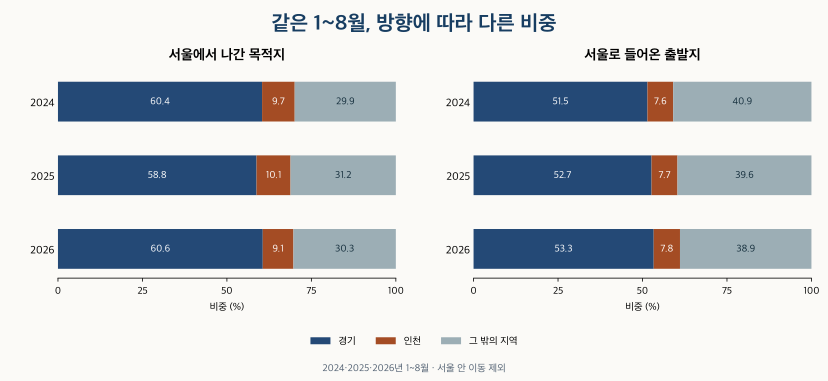

이사와 인구 · 서울의 출발지와 목적지
서울 전출 목적지와 전입 출발지: 경기·인천 비중은 얼마나 될까?
2024~2026년 서울 시도 간 이동에서 경기·인천과 그 밖의 지역을 비교했습니다. 전출 목적지·전입 출발지 순위, 같은 1~8월 변화와 월별 상위 10개 목록의 한계를 확인합니다.
분석 기간 · 2024년 1월~2026년 8월 · 시도 간 이동 | 자료 기준일 · 공식 갱신 2026-09-23 · 확인 2026-10-16
‘서울을 떠나는 사람이 많다’는 기사에서 빠지기 쉬운 질문이 있습니다. 어디로 갔고, 반대로 어디에서 서울로 들어왔을까요? 서울 전출 목적지와 전입 출발지를 나눠 보면 경기·인천과 그 밖의 지역이 서울의 순이동에 서로 다르게 기여합니다.
2025년 서울에서 다른 시도로 나간 사람 중 경기로 간 비중은 59.5%, 인천은 10.0%였습니다. 반대로 서울로 들어온 사람의 출발지는 경기 53.8%, 인천 7.8%였습니다. 경기·인천과는 순유출이지만 그 밖의 지역을 합치면 순유입입니다. 서울 전체의 순유출을 모든 지역과의 관계로 일반화하면 방향을 놓칩니다.
서울 안 이사도 포함하나요?
이 글의 전출은 서울에서 다른 시도로, 전입은 다른 시도에서 서울로 이동한 사람 수입니다. 서울 안에서 구나 동을 옮긴 이동은 두 방향의 분모에서 제외했습니다. 순이동은 전입에서 전출을 뺀 값으로, 음수이면 순유출입니다.
전입신고를 바탕으로 센 이동자 수이지 고유 개인 수나 가구 수, 아파트 거래량이 아닙니다. 여러 번 이동한 사람이 다시 포함될 수 있고 아파트 밖 주거도 포함합니다. 이 통계만으로 매수자 수나 새 아파트 입주 가구 수를 알 수는 없습니다.
기본 비교는 공식 원표의 2024·2025년 전체와 2024·2025·2026년의 같은 1~8월입니다. 원표는 2026년 7월부터 광주·전남을 통합 지역으로 제공합니다. 비교 기간의 지역 범위를 맞추기 위해 이전 두 지역도 합쳤습니다. 따라서 아래 순위는 서울을 제외한 공통 지역 범위 15곳의 순위이며, 당시 별도 시도 구분을 사용한 월별 상위 10개 목록은 뒤에서 따로 보여줍니다.
서울에서 나간 사람은 어디로 갔나요?
2025년 서울의 시도 간 전출은 465,096명이었습니다. 경기 276,867명, 인천 46,570명으로 두 지역이 가장 많았습니다. 그 뒤는 충남 17,671명, 강원 16,405명입니다. 비중은 각 목적지로 간 사람 수를 서울의 시도 간 전출 전체로 나눴습니다.
| 순위 | 상대 지역 | 이동자 수 | 방향별 비중 | 서울 기준 순이동 |
|---|---|---|---|---|
| 1 | 경기 | 276,867 | 59.5% | -41,199 |
| 2 | 인천 | 46,570 | 10.0% | -12,472 |
| 3 | 충남 | 17,671 | 3.8% | 49 |
| 4 | 강원 | 16,405 | 3.5% | 121 |
| 5 | 광주·전남 | 15,117 | 3.3% | 4,239 |
| 6 | 부산 | 12,662 | 2.7% | 5,493 |
| 7 | 충북 | 12,009 | 2.6% | -21 |
| 8 | 대전 | 11,229 | 2.4% | 1,526 |
| 9 | 경남 | 11,143 | 2.4% | 3,836 |
| 10 | 경북 | 11,087 | 2.4% | 2,435 |
| 11 | 전북 | 9,968 | 2.1% | 1,375 |
| 12 | 대구 | 8,815 | 1.9% | 4,711 |
| 13 | 제주 | 6,972 | 1.5% | 1,187 |
| 14 | 세종 | 4,548 | 1.0% | 461 |
| 15 | 울산 | 4,033 | 0.9% | 1,490 |
이 순위는 이동 규모를 보여줍니다. 지역 인구로 나눈 이동 성향이나 주거 선호의 순위는 아닙니다. 서울과 가까운 경기·인천은 통근·가족·교육 등 생활권도 겹치므로, 큰 이동량만으로 집값 때문에 떠났다는 원인을 특정할 수 없습니다.
서울로 들어온 사람은 어디에서 왔나요?
2025년 서울의 시도 간 전입은 438,327명이었습니다. 경기 235,668명과 인천 34,098명이 가장 많지만, 경기 비중은 전출 때보다 낮은 53.8%입니다. 한 방향의 이동만 보면 같은 상대 지역에서 반대로 들어오는 규모가 빠집니다.
| 순위 | 상대 지역 | 이동자 수 | 방향별 비중 | 서울 기준 순이동 |
|---|---|---|---|---|
| 1 | 경기 | 235,668 | 53.8% | -41,199 |
| 2 | 인천 | 34,098 | 7.8% | -12,472 |
| 3 | 광주·전남 | 19,356 | 4.4% | 4,239 |
| 4 | 부산 | 18,155 | 4.1% | 5,493 |
| 5 | 충남 | 17,720 | 4.0% | 49 |
| 6 | 강원 | 16,526 | 3.8% | 121 |
| 7 | 경남 | 14,979 | 3.4% | 3,836 |
| 8 | 대구 | 13,526 | 3.1% | 4,711 |
| 9 | 경북 | 13,522 | 3.1% | 2,435 |
| 10 | 대전 | 12,755 | 2.9% | 1,526 |
| 11 | 충북 | 11,988 | 2.7% | -21 |
| 12 | 전북 | 11,343 | 2.6% | 1,375 |
| 13 | 제주 | 8,159 | 1.9% | 1,187 |
| 14 | 울산 | 5,523 | 1.3% | 1,490 |
| 15 | 세종 | 5,009 | 1.1% | 461 |
서울은 경기와의 이동에서 41,199명, 인천과는 12,472명이 순유출됐습니다. 반면 두 지역을 제외한 합계는 전입 168,561명, 전출 141,659명으로 순유입입니다. 예를 들어 부산에서는 서울로 들어온 수가 서울에서 부산으로 나간 수보다 5,493명 많았습니다. 서울 전체의 순유출 26,769명은 서로 다른 방향을 합친 결과입니다.
최근에도 경기·인천 비중이 같나요?
연도 전체와 부분 연도를 섞지 않고 비교하면 변화가 보입니다. 2024년 전체 전출의 경기 비중은 61.3%, 2025년은 59.5%였습니다. 같은 1~8월끼리는 2024년 60.4%, 2025년 58.8%, 2026년 60.6%입니다. 한 번 낮아졌다는 사실을 계속 낮아지는 추세로 읽을 수 없습니다.

| 기간 | 전체 | 경기 | 경기 비중 | 인천 | 인천 비중 | 그 밖의 지역 | 그 밖의 비중 |
|---|---|---|---|---|---|---|---|
| 2024년 | 473,140 | 290,079 | 61.3% | 44,861 | 9.5% | 138,200 | 29.2% |
| 2025년 | 465,096 | 276,867 | 59.5% | 46,570 | 10.0% | 141,659 | 30.5% |
| 2024년 1~8월 | 328,653 | 198,542 | 60.4% | 31,735 | 9.7% | 98,376 | 29.9% |
| 2025년 1~8월 | 322,913 | 189,786 | 58.8% | 32,491 | 10.1% | 100,636 | 31.2% |
| 2026년 1~8월 | 333,125 | 201,933 | 60.6% | 30,210 | 9.1% | 100,982 | 30.3% |
| 기간 | 전체 | 경기 | 경기 비중 | 인천 | 인천 비중 | 그 밖의 지역 | 그 밖의 비중 |
|---|---|---|---|---|---|---|---|
| 2024년 | 428,448 | 227,158 | 53.0% | 32,991 | 7.7% | 168,299 | 39.3% |
| 2025년 | 438,327 | 235,668 | 53.8% | 34,098 | 7.8% | 168,561 | 38.5% |
| 2024년 1~8월 | 303,214 | 156,077 | 51.5% | 23,094 | 7.6% | 124,043 | 40.9% |
| 2025년 1~8월 | 314,622 | 165,748 | 52.7% | 24,147 | 7.7% | 124,727 | 39.6% |
| 2026년 1~8월 | 311,812 | 166,250 | 53.3% | 24,247 | 7.8% | 121,315 | 38.9% |
같은 1~8월 순유출은 2024년 25,439명, 2025년 8,291명, 2026년 21,313명입니다. 2025년에 줄었다가 2026년에 다시 커졌지만, 2026년 연간 결과는 아직 알 수 없습니다. 연말까지 비례 확대해 추정하지 않았습니다.
| 기간 | 전입 | 전출 | 순이동 |
|---|---|---|---|
| 2024년 | 428,448 | 473,140 | -44,692 |
| 2025년 | 438,327 | 465,096 | -26,769 |
| 2024년 1~8월 | 303,214 | 328,653 | -25,439 |
| 2025년 1~8월 | 314,622 | 322,913 | -8,291 |
| 2026년 1~8월 | 311,812 | 333,125 | -21,313 |
어느 달에 이동이 많았나요?
완결된 두 해에서 전입·전출이 가장 많았던 달은 모두 2월입니다. 2024년 2월은 전입 54,551명·전출 51,417명, 2025년 2월은 전입 57,740명·전출 52,121명이었습니다. 두 달 모두 전입이 전출보다 많아 연간 순유출과 방향도 달랐습니다.
새 학기와 직장 이동을 가능한 설명으로 생각할 수는 있습니다. 다만 이 표는 이동 사유나 같은 사람의 계약을 연결하지 않았으므로 원인을 확인한 결과가 아닙니다. 두 번의 완결 연도만으로 매년 반복되는 계절 법칙을 확정하지 않습니다. 월별 변화와 누적 변화도 구분해서 읽어야 합니다.
2024년 1월~2026년 8월 월별 수치 보기
| 월 | 전입(명) | 전출(명) | 순이동(명) | 전입 경기 | 전입 인천 | 전출 경기 | 전출 인천 |
|---|---|---|---|---|---|---|---|
| 2024-01 | 43,204 | 43,969 | -765 | 50.9% | 7.0% | 57.6% | 9.7% |
| 2024-02 | 54,551 | 51,417 | 3,134 | 47.8% | 7.0% | 57.7% | 9.8% |
| 2024-03 | 43,047 | 44,284 | -1,237 | 48.7% | 7.4% | 57.9% | 10.3% |
| 2024-04 | 35,047 | 40,889 | -5,842 | 53.2% | 7.8% | 61.3% | 9.8% |
| 2024-05 | 30,796 | 36,679 | -5,883 | 54.4% | 8.3% | 63.7% | 9.2% |
| 2024-06 | 27,111 | 32,669 | -5,558 | 54.2% | 8.4% | 63.2% | 9.2% |
| 2024-07 | 33,644 | 39,084 | -5,440 | 53.5% | 8.0% | 62.2% | 9.7% |
| 2024-08 | 35,814 | 39,662 | -3,848 | 52.9% | 7.8% | 61.9% | 9.3% |
| 2024-09 | 30,112 | 34,412 | -4,300 | 55.7% | 8.0% | 63.8% | 8.9% |
| 2024-10 | 31,774 | 38,054 | -6,280 | 58.4% | 8.1% | 64.9% | 8.9% |
| 2024-11 | 28,166 | 33,882 | -5,716 | 57.9% | 7.9% | 63.7% | 8.7% |
| 2024-12 | 35,182 | 38,139 | -2,957 | 55.3% | 7.7% | 61.1% | 9.8% |
| 2025-01 | 37,115 | 37,911 | -796 | 51.5% | 7.6% | 58.2% | 10.0% |
| 2025-02 | 57,740 | 52,121 | 5,619 | 49.2% | 7.0% | 55.6% | 10.7% |
| 2025-03 | 43,615 | 42,309 | 1,306 | 49.9% | 7.6% | 57.1% | 10.1% |
| 2025-04 | 31,698 | 35,416 | -3,718 | 55.1% | 8.0% | 60.2% | 10.4% |
| 2025-05 | 31,809 | 35,466 | -3,657 | 55.8% | 8.0% | 60.9% | 10.6% |
| 2025-06 | 34,257 | 36,933 | -2,676 | 54.9% | 7.8% | 62.4% | 9.7% |
| 2025-07 | 41,353 | 43,907 | -2,554 | 54.0% | 8.0% | 58.1% | 9.2% |
| 2025-08 | 37,035 | 38,850 | -1,815 | 54.2% | 8.0% | 59.6% | 9.7% |
| 2025-09 | 34,441 | 37,823 | -3,382 | 56.9% | 8.1% | 60.6% | 10.7% |
| 2025-10 | 27,520 | 32,225 | -4,705 | 57.9% | 8.2% | 61.9% | 10.3% |
| 2025-11 | 26,417 | 31,921 | -5,504 | 57.2% | 8.0% | 62.1% | 9.4% |
| 2025-12 | 35,327 | 40,214 | -4,887 | 54.6% | 7.9% | 60.7% | 9.3% |
| 2026-01 | 43,844 | 43,949 | -105 | 53.0% | 7.3% | 60.6% | 8.4% |
| 2026-02 | 52,821 | 48,594 | 4,227 | 49.7% | 7.3% | 58.9% | 8.3% |
| 2026-03 | 49,033 | 49,200 | -167 | 50.3% | 7.4% | 58.4% | 8.6% |
| 2026-04 | 34,488 | 40,829 | -6,341 | 56.5% | 8.3% | 61.4% | 8.8% |
| 2026-05 | 32,099 | 36,320 | -4,221 | 56.0% | 8.2% | 61.0% | 9.3% |
| 2026-06 | 31,748 | 37,445 | -5,697 | 55.5% | 8.4% | 62.6% | 10.1% |
| 2026-07 | 31,950 | 38,058 | -6,108 | 55.8% | 8.1% | 61.9% | 9.8% |
| 2026-08 | 35,829 | 38,730 | -2,901 | 53.4% | 7.8% | 61.3% | 9.8% |
상위 10개 자료를 더하면 연간 순위가 되나요?
매달 목록에 들어온 지역이 다르면 그대로 더해서 전체 순위를 만들 수 없습니다. 확인한 KB 서울 상위 10개 자료는 2024년 6월~2025년 5월의 12개월이고, 갱신 표시는 2025년 7월 17일입니다. 자료를 확인한 날이 2026년이라고 관측 기간까지 2026년으로 바뀌지 않습니다. 달력상 한 해와도 다릅니다.
| 방향 | 시도 간 전체 | 상위 10개 합 | 목록 밖 합 | 서울 안 이동(분모 제외) |
|---|---|---|---|---|
| 서울로 전입 | 423,780 | 376,107 | 47,673 | 794,651 |
| 서울에서 전출 | 459,125 | 421,195 | 37,930 | 794,651 |
이 기간 경기·인천은 두 방향의 모든 월에 포함됐습니다. 그러나 전입 출발지의 대전은 9개월, 전북은 7개월, 충북은 8개월만 목록에 나타납니다. 전출 목적지의 대구는 1개월, 전북은 11개월입니다. 빠진 달은 이동이 0명이었던 달이 아닙니다. 상위 10개 밖에 있었다는 뜻입니다.
아래는 당시 지역 구분과 원래 목록 순서를 그대로 남긴 비교입니다. 한 달의 10번째 지역 이름이 다른 달에도 같다고 가정하지 않습니다. 앞의 연간·동일 기간 순위는 목록의 빈칸을 0으로 채운 결과가 아니라, 모든 상대 지역이 있는 공식 원표에서 따로 계산한 결과입니다. 광주·전남도 앞의 공통 범위 비교와 이 원래 목록에서는 구분 방식이 다릅니다.
원래 월별 전출 목적지 상위 10개 보기
| 월 | 1번째 | 2번째 | 3번째 | 4번째 | 5번째 | 6번째 | 7번째 | 8번째 | 9번째 | 10번째 |
|---|---|---|---|---|---|---|---|---|---|---|
| 2024-06 | 경기 20,636 | 인천 2,999 | 강원 1,134 | 충남 1,128 | 충북 806 | 경북 751 | 부산 746 | 경남 684 | 전북 645 | 대전 621 |
| 2024-07 | 경기 24,302 | 인천 3,803 | 충남 1,430 | 강원 1,253 | 부산 1,015 | 충북 887 | 경북 880 | 경남 820 | 대전 796 | 대구 711 |
| 2024-08 | 경기 24,546 | 인천 3,670 | 충남 1,497 | 강원 1,362 | 부산 1,044 | 대전 923 | 경북 898 | 충북 890 | 경남 813 | 전북 774 |
| 2024-09 | 경기 21,963 | 인천 3,051 | 충남 1,199 | 강원 1,040 | 부산 873 | 충북 838 | 대전 747 | 경남 708 | 경북 705 | 전북 666 |
| 2024-10 | 경기 24,692 | 인천 3,403 | 충남 1,315 | 강원 1,193 | 부산 851 | 충북 805 | 경북 783 | 전북 773 | 경남 763 | 대전 697 |
| 2024-11 | 경기 21,580 | 인천 2,944 | 충남 1,195 | 강원 1,077 | 충북 866 | 부산 830 | 경북 752 | 전북 724 | 경남 706 | 대전 617 |
| 2024-12 | 경기 23,302 | 인천 3,728 | 충남 1,350 | 강원 1,274 | 부산 952 | 경북 897 | 경남 885 | 충북 881 | 대전 830 | 전북 813 |
| 2025-01 | 경기 22,048 | 인천 3,805 | 충남 1,439 | 강원 1,290 | 부산 1,054 | 대전 1,015 | 경남 1,013 | 경북 995 | 충북 905 | 전북 898 |
| 2025-02 | 경기 28,957 | 인천 5,577 | 충남 2,239 | 강원 1,998 | 부산 1,621 | 대전 1,512 | 충북 1,457 | 경북 1,321 | 경남 1,292 | 전북 1,218 |
| 2025-03 | 경기 24,175 | 인천 4,255 | 충남 1,764 | 강원 1,599 | 충북 1,233 | 부산 1,228 | 경북 1,163 | 경남 1,124 | 대전 1,084 | 전북 952 |
| 2025-04 | 경기 21,331 | 인천 3,679 | 강원 1,278 | 충남 1,277 | 경북 913 | 충북 895 | 부산 875 | 경남 816 | 대전 768 | 전북 709 |
| 2025-05 | 경기 21,601 | 인천 3,762 | 충남 1,276 | 강원 1,171 | 부산 906 | 충북 862 | 경남 818 | 경북 809 | 대전 759 | 전북 727 |
원래 월별 전입 출발지 상위 10개 보기
| 월 | 1번째 | 2번째 | 3번째 | 4번째 | 5번째 | 6번째 | 7번째 | 8번째 | 9번째 | 10번째 |
|---|---|---|---|---|---|---|---|---|---|---|
| 2024-06 | 경기 14,689 | 인천 2,274 | 충남 1,117 | 부산 1,069 | 강원 1,035 | 경북 879 | 경남 868 | 대전 766 | 대구 754 | 전북 731 |
| 2024-07 | 경기 18,001 | 인천 2,693 | 부산 1,380 | 강원 1,322 | 충남 1,259 | 경남 1,116 | 경북 1,084 | 대전 1,031 | 대구 963 | 전북 897 |
| 2024-08 | 경기 18,958 | 인천 2,786 | 부산 1,612 | 충남 1,423 | 강원 1,321 | 경남 1,216 | 대전 1,112 | 대구 1,086 | 경북 1,064 | 전북 985 |
| 2024-09 | 경기 16,759 | 인천 2,406 | 부산 1,178 | 강원 1,115 | 충남 1,102 | 경남 951 | 경북 891 | 대구 824 | 전북 795 | 충북 787 |
| 2024-10 | 경기 18,550 | 인천 2,561 | 강원 1,181 | 부산 1,123 | 충남 1,113 | 경남 905 | 경북 867 | 대구 832 | 대전 763 | 충북 760 |
| 2024-11 | 경기 16,306 | 인천 2,221 | 강원 1,085 | 부산 996 | 충남 976 | 경남 844 | 경북 826 | 충북 743 | 대구 702 | 전북 700 |
| 2024-12 | 경기 19,466 | 인천 2,709 | 충남 1,421 | 부산 1,399 | 강원 1,384 | 경남 1,099 | 경북 1,030 | 대전 1,028 | 대구 981 | 충북 978 |
| 2025-01 | 경기 19,119 | 인천 2,804 | 부산 1,599 | 충남 1,593 | 강원 1,582 | 경남 1,329 | 대전 1,188 | 경북 1,187 | 대구 1,146 | 충북 1,089 |
| 2025-02 | 경기 28,407 | 인천 4,017 | 부산 2,707 | 충남 2,550 | 경남 2,442 | 강원 2,388 | 대전 2,161 | 대구 2,153 | 경북 1,965 | 충북 1,728 |
| 2025-03 | 경기 21,785 | 인천 3,303 | 부산 1,995 | 충남 1,975 | 강원 1,774 | 경남 1,652 | 대구 1,568 | 경북 1,518 | 대전 1,493 | 전북 1,242 |
| 2025-04 | 경기 17,474 | 인천 2,549 | 부산 1,314 | 강원 1,240 | 충남 1,226 | 경남 969 | 대구 924 | 경북 875 | 전북 856 | 충북 832 |
| 2025-05 | 경기 17,753 | 인천 2,548 | 부산 1,213 | 강원 1,203 | 충남 1,190 | 경남 1,029 | 대구 939 | 경북 932 | 대전 885 | 충북 849 |
시·구와 주택을 고를 때 어떻게 쓰나요?
이 수치는 광역 생활권의 이동 방향을 읽는 출발점입니다. 경기로 간 사람 수를 수원·화성 같은 개별 도시의 수요로 배분할 수는 없습니다. 광역 순유입·순유출을 특정 아파트의 매수 신호로 바꾸는 것도 근거가 부족합니다.
- 방향과 분모를 확인하세요. 전입·전출·순이동 중 무엇인지, 서울 안 이동이 섞였는지 먼저 봅니다.
- 같은 기간을 비교하세요. 2026년 1~8월은 이전 해 1~8월과 비교하고 완결 연도와 구분합니다.
- 시·구의 조건을 따로 확인하세요. 연령 구성, 직업 사유, 입주 일정이 각각 무엇을 세는지 확인한 뒤 통근·예산·실제 주택 조건을 살펴봅니다.
이동 목적은 직업 사유와 작은 아파트 전월세 구성, 시별 연령 차이는 입주가 많은 경기 도시의 연령별 이동에서 이어서 볼 수 있습니다. 두 글도 같은 주민이 어느 아파트를 선택했는지 확인한 자료는 아닙니다.
자료·계산 방법과 공개 집계
공식 자료는 KOSIS ‘전출지/전입지(시도)별 이동자수’의 2024년 1월~2026년 8월입니다. 원표 갱신일은 2026년 9월 23일, 확인일은 2026년 10월 16일입니다. 서울과 다른 시도 사이의 두 방향을 추출하고 서울 안 이동을 제외했습니다. 전체 지역의 합과 양방향 차이, 같은 기간 KB 수치와 공식 원표를 대조했습니다.
원표의 2026년 7월 이후 광주·전남 통합 구분에 맞춰 기간 비교에서는 이전 광주와 전남도 합쳤습니다. 통합 후 이전 두 지역의 0을 실제 이동이 없었다는 뜻으로 쓰지 않았습니다. 월별 상위 10개 목록은 당시 구분을 보존했으며, 목록에서 빠진 지역의 합계를 확정값으로 표시하지 않았습니다.
기간 비중은 그 기간의 상대 지역 이동자 수 합을 같은 방향의 전체 이동자 수 합으로 나눴습니다. 월별 비중을 단순 평균하지 않았고 마지막에 소수 첫째 자리로 반올림했습니다. 순위는 이동자 수 기준이며 동률은 같은 순위입니다. 순이동은 서울 기준 전입−전출입니다.
출처는 KOSIS 전출지·전입지 공식표와 KB 인구 통계입니다. 공개 집계 파일(JSON)에는 기간별·월별 비교와 원래 상위 목록, 목록에서 확인할 수 있는 합계의 범위를 담았습니다. 범위의 하한 0은 실제 이동 0명을 뜻하지 않습니다. 개별 주민이나 주택·계약의 연결 정보는 포함하지 않습니다.
분석·집필: 파파펭귄 (Nobot Kang). 에이전트로 공식 원표와 기간·지역 비교 검산, 도표 제작과 초안 검토를 보조했습니다.